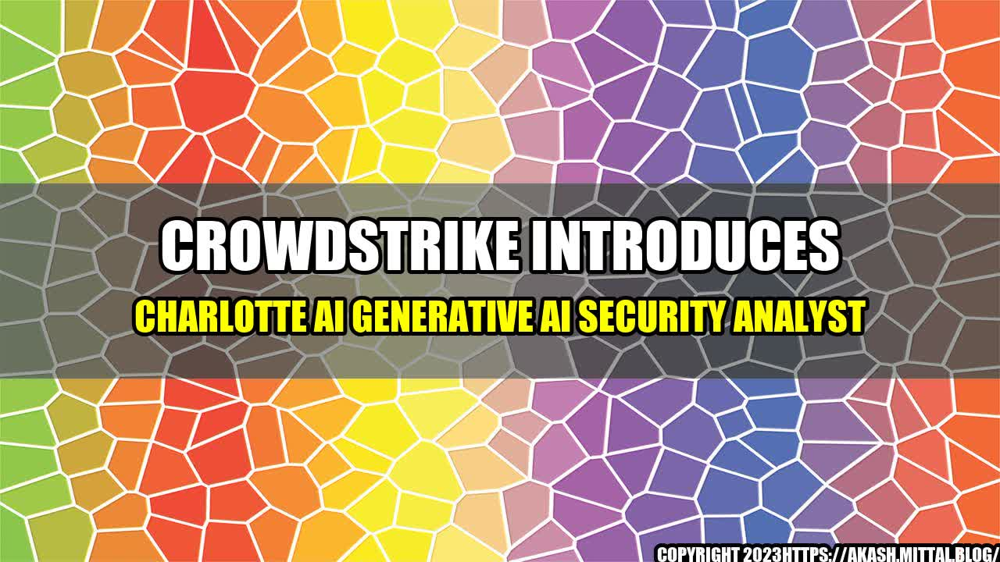

CrowdStrike Introduces Charlotte AI Generative AI Security Analyst
Cybersecurity is an essential part of modern-day business operations. Companies today invest heavily in the latest technologies to secure their data and systems against malicious attacks. Several advanced security products have been developed in recent years, but the growing sophistication of cyber-threats requires an even more advanced defense system. The introduction of Charlotte AI Generative AI Security Analyst by CrowdStrike promises to take enterprise security to an entirely new level.

What is Charlotte AI Generative AI Security Analyst?
Charlotte AI Generative AI Security Analyst is an artificial intelligence-powered system that replaces the traditional security analyst role in an organization. It works by continually analyzing data from various sources and applying advanced algorithms and machine learning techniques to identify potential security threats promptly. With this technology, businesses can detect and mitigate cyber-attacks before significant damage occurs.
The introduction of Charlotte AI is a considerable step forward in enterprise security technology. Its capacity for real-time threat analysis sets it apart from current technologies which require human analysis before escalating issues. Charlotte AI's adaptability and scalability make it a reliable asset in securing small medium and large enterprises alike.
How does Charlotte AI Generative AI Security Analyst work?
One of the challenges businesses face in securing their systems and data is the sheer volume of information that needs to be processed continuously. Most traditional security systems rely on rule-based systems to detect anomalies in data. Charlotte AI takes a radically different approach by using Generative AI models to develop expectations of what interactions should look like within an enterprise. These models can then detect anomalies in these interactions and flag them for investigation.
For example, suppose a particular system-user accesses a set of files significantly larger than their typical usage quantity or accesses those files outside of their typical timeframe. In that case, this interaction will be flagged as an anomaly, and the specific usage case will be investigated to ascertain its legitimacy. Generative AI models have the capability of self-improvement once they identify and note new patterns are flagged as anomalies. This way, Charlotte AI not only detects anomalous behaviors and patterns of interactions but also identifies novel patterns of behavior that the rule-based systems might miss.
Charlotte AI Generative AI Security Analyst's Performance
Charlotte AI Generative AI Security Analyst has been deployed in various enterprises, and the results have been remarkable. Some examples of its performance include:
- Charlotte AI can process up to 1.8 million data signals in one second, making it 15 times faster than traditional security systems.
- With a 93 percent detection accuracy rate, Charlotte AI is significantly more accurate than traditional security systems.
- The time to resolve security incidents with Charlotte AI on average is 80% faster than non-Crowdstrike customers who still used traditional security measures.
- With every new incident, the system retrains itself and improve its anomaly detection capabilities ensuring the latest attack methods are included.
- Additionally, early adopters of Charlotte AI report savings of up to 70% in security costs, having reduced the need for human analysts in many areas.
A Personal Account of Charlotte AI Generative AI Security Analyst's Performance
I had the pleasure of working with a client who had recently adopted Charlotte AI into their defense system. The client used a rule-based system, which continually generated alarm bells due to an excess of false positives. They had recently faced several cybersecurity threats that led to significant economic losses. The organization was impressed with Charlotte AI's capacity to manage large volumes of data and identify anomalies quickly, that other security measures missed.
Over the following months, the client saw a significant decline in the number of false alarms and had a more precise analyzing of legit threats. Additionally, the client had reduced the number of teams assigned to security, saving almost 60% in costs.
Conclusion
The introduction of Charlotte AI Generative AI Security Analyst by CrowdStrike is a significant move in the enterprise security technology field. The system consists of an AI-powered security analyst who seamlessly identifies and mitigates cyber-attack issues, which traditional analyst would miss altogether. With its 93% accuracy rate in detecting security threats, small, medium and large companies can now keep their data and systems safe.
The benefits of this technology are apparent, which are well-known to its early adopters who report on average up to 70% in cost reductions, more precise detection of security threats, and quicker incident resolutions. Companies who are seeking more advanced security solutions are advised to consider implementing this disruptive technology.
Charlotte AI is a reliable and proven addition to the enterprise-security ecosystem and one that any organization concerned about cybersecurity ought to consider deploying.
Curated by Team Akash.Mittal.Blog
Share on Twitter Share on LinkedIn